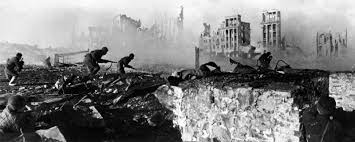

Battle of Stalingrad
The Battle of Stalingrad, fought between August 23, 1942, and February 2, 1943, was one of the most pivotal and brutal confrontations of World War II. It marked a turning point in the war on the Eastern Front and is often considered one of the bloodiest battles in history. The battle was fought between Nazi Germany and the Soviet Union for control of the city of Stalingrad (now Volgograd) in southern Russia.
German Offensive - Operation Blau
In the summer of 1942, Adolf Hitler launched Operation Blau, an offensive aimed at capturing the oil-rich Caucasus region and cutting off Soviet access to vital resources. Stalingrad, a major industrial city on the Volga River, was also a key strategic target due to its symbolic and military importance. Hitler's goal was to crush Soviet morale by seizing the city named after Joseph Stalin and to secure a crucial transportation hub.
The German 6th Army, under General Friedrich Paulus, was tasked with capturing Stalingrad. The Wehrmacht advanced rapidly into the region, but the Soviet Red Army and civilians mounted fierce resistance, turning the city into a fortified battleground.
The Brutality of Urban Warfare

The Battle of Stalingrad was defined by its brutal, close-quarter urban combat. The Germans advanced block by block, street by street, and house by house, facing determined Soviet resistance. Soviet forces, including soldiers, civilians, and local militia, fought with desperation to defend their city. The fighting was relentless, with both sides suffering heavy casualties in the harsh winter conditions.
Soviet forces used the city's ruins as an advantage, creating ambushes and sniping positions from the wreckage. The battle’s intensity was exacerbated by a complete disregard for civilian life, with the city largely destroyed by artillery, bombings, and hand-to-hand combat. The city became a symbol of Soviet resolve, with the motto "Not a step back!" becoming a rallying cry for the Red Army.
Soviet Counteroffensive - Operation Uranus
While the Germans were bogged down in the city, the Soviet command, led by General Vasily Chuikov, prepared a counteroffensive. On November 19, 1942, the Red Army launched Operation Uranus, a massive encirclement attack. Soviet forces, including troops from the Don and Stalingrad Fronts, encircled the German 6th Army, trapping them in the city.
The Germans, now surrounded, were cut off from supplies and reinforcements. Despite Hitler’s orders to hold the position at all costs, the German forces were unable to break out of the encirclement. Conditions in the pocket deteriorated rapidly. The winter cold, lack of food, and constant Soviet bombardment led to massive suffering among the German troops.
German Surrender and Soviet victory
By February 1943, after months of grueling combat and heavy losses on both sides, the situation for the Germans became untenable. General Paulus, who had been promoted to Field Marshal by Hitler in a last-ditch attempt to prevent his surrender, was forced to surrender on February 2, 1943. The German 6th Army, one of the most elite formations in the Wehrmacht, was effectively destroyed, with around 91,000 soldiers taken prisoner. Only a fraction of those would survive captivity.
The victory at Stalingrad was a significant turning point in World War II. It marked the first major defeat for Nazi Germany and shattered the myth of their invincibility. For the Soviets, it was a critical morale booster and a key step in their eventual push westward, leading to the liberation of Eastern Europe and the defeat of Nazi Germany.
Nazi Germany's Loss of Momentum on the Eastern Front
The defeat at Stalingrad had long-term consequences for Nazi Germany. The loss of an entire army and the failure of Operation Blau meant that the Germans were no longer able to advance into the Soviet Union as planned. The Soviet Union, buoyed by their victory, began a series of counterattacks that would eventually drive the Germans out of Eastern Europe and back into Germany itself.
Additionally, Stalingrad marked the beginning of the end for Adolf Hitler’s military strategy. Hitler's refusal to allow his forces to retreat or regroup led to unnecessary casualties and the eventual collapse of the German 6th Army. The battle showed the vulnerability of Nazi Germany's forces and further revealed Hitler's inability to make sound strategic decisions.
Cultural and Psychological Impact
The Battle of Stalingrad had a lasting cultural and psychological impact, both in the Soviet Union and Germany. In the Soviet Union, Stalingrad became a symbol of resistance and national pride. The city’s name was immortalized in Soviet propaganda, and the victory was seen as a heroic stand against fascism. The battle's victory was portrayed as a triumph of the willpower of the Soviet people, and it remains one of the defining moments of the Great Patriotic War (the Soviet term for WWII).
For Nazi Germany, the defeat at Stalingrad was a humiliating blow. It shattered the image of Nazi invincibility and marked the beginning of a steady retreat from occupied Soviet territory. Stalingrad would forever be associated with the turning of the tide against Hitler's regime.